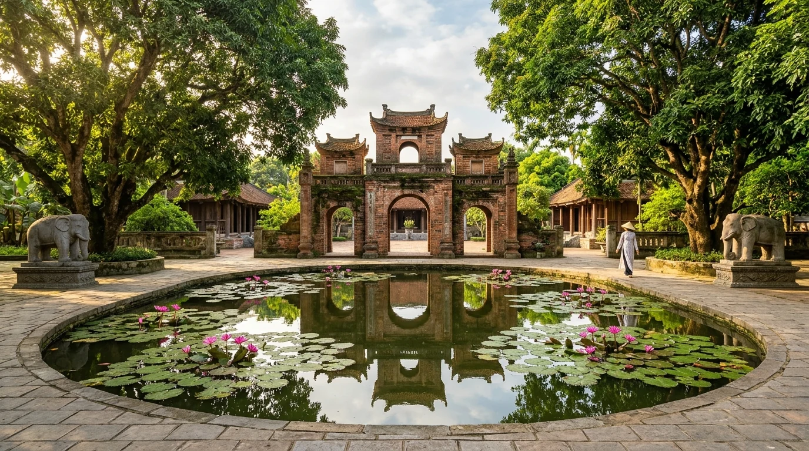

🧭 1. Tổng Quan Chùa Phổ Minh & Biểu Tượng Vương Triều Trần
Theo chính sử Đại Việt sử ký toàn thư và bi ký cổ, chùa vốn có từ thời Lý, đến năm 1262 được vương triều Trần mở rộng quy mô lớn ngay phía Tây cung Trùng Quang của các Thái thượng hoàng để làm nơi tu tập của hoàng tộc và bách tính. Năm 1305 dưới triều vua Trần Anh Tông, Tháp Phổ Minh được kiến tạo uy nghiêm giữa sân chùa; sau khi Đức Điều Ngự Giác Hoàng Trần Nhân Tông nhập Niết bàn trên ngọn Ngọa Vân (tháng 11 năm Mậu Thân 1308), vua Trần Anh Tông đã rước một phần ngọc cốt xá lợi của Phụ hoàng đặt vào quách đá an vị trong lòng tháp.
Thuộc quần thể Di tích Quốc gia đặc biệt Đền Trần – Chùa Phổ Minh (QĐ 1419/QĐ-TTg ngày 27/9/2012), Tháp Phổ Minh có bình đồ hình vuông cao 19,51m gồm 14 tầng nặng khoảng 700 tấn: bệ kiệu và tầng 1 ghép từ đá xanh chạm cánh sen kép và sóng nước mềm mại, 13 tầng trên xây gạch đỏ trần in niên hiệu Hưng Long thập tam niên (1305) cùng hoa văn rồng nổi, đỉnh đội búp sen đất nung cổ kính (từng được in trang trọng trên tờ tiền giấy 100 đồng Việt Nam). Chùa còn nổi danh với Bảo vật Quốc gia bộ 4 cánh cửa gỗ lim chạm rồng gian giữa Tiền đường thời Trần và truyền thuyết dân gian về chiếc vạc đồng lớn thời Trần.
📜 2. Nghi Thức Chiêm Bái Đất Phát Tích Nhà Trần
Chùa Phổ Minh là chốn quốc tự tôn nghiêm gắn với Phật hoàng Trần Nhân Tông và vương triều Trần. Hành giả về chiêm bái cần giữ phong thái điềm đạm, thành kính:
🏮 3 Quy Chuẩn Văn Minh Khi Hành Lễ Tại Chùa Phổ Minh
🗼 Tôn Kính Bảo Tháp Xá Lợi 700 Năm
Khi đi nhiễu quanh Tháp Phổ Minh, bước nhẹ theo chiều kim đồng hồ bên ngoài hàng lan can đá; không trèo lên bậc kiệu đá xanh, không sờ mòn hoa văn rồng đá và gạch cổ thời Trần.
🚪 Giữ Gìn Kiến Trúc Gỗ Lim & Nói Không Với Mê Tín
Không thắp hương lớn bên trong Tiền đường – Thượng điện gỗ lim; dâng lễ chay thanh tịnh (hoa sen, oản, trái cây), không chen lấn rải tiền lẻ lên kiệu đá hay vạc đồng.
👘 Kết Hợp Chiêm Bái Văn Minh Cùng Đền Trần
Chùa Phổ Minh nằm cách Đền Trần khoảng 300m về phía Tây: nên dành thời gian tĩnh lặng tại chùa để lắng tâm thiền định đúng tinh thần Cư trần lạc đạo của Phật hoàng.
⛩️ 3. Lộ Trình 6 Trạm Chùa Phổ Minh & Dấu Ấn Đông A
Lộ trình 6 trạm đưa hành giả qua cổng Tam Quan soi bóng hồ sen, chiêm bái Bảo tháp 14 tầng năm 1305, ngắm bệ đá hoa sen, cửa gỗ lim chạm rồng, Thượng điện thờ Trúc Lâm Tam Tổ và ghé làng hoa cây cảnh Vị Khê 800 năm tuổi.
Hành Trình Chiêm Bái Chùa Phổ Minh — Tháp Cổ Thời Trần
Chiêm ngưỡng kiệt tác bảo tháp vuông 14 tầng hơn bảy thế kỷ, lắng nghe tiếng chuông ngân trên đất phát tích Đông A và trì tụng văn khấn Phật hoàng.

Phía trước chùa là đôi hồ tròn thả sen thơm ngát soi bóng cổng Tam Quan 3 gian lợp ngói nam rêu phong, hai bên bậc thềm có đôi voi đá quỳ chầu dưới tán những gốc muỗm cổ thụ hàng trăm năm tuổi trên đất hương hỏa nhà Trần.
🌳 Cảnh Quan Quốc Tự Phủ Thiên Trường
- Chùa quay hướng Nam theo truyền thống "Thánh nhân nam diện", đón làn gió mát từ châu thổ sông Hồng.
- Hàng cây muỗm cổ và hồ nước phía trước tạo minh đường tĩnh lặng tách biệt nhịp phố thị.
- Đi vào cửa Giả quan bên phải, tránh giẫm lên ngưỡng cửa gỗ.
👑 Quê Hương Các Vị Vua Hiền Nhà Trần
- Tức Mặc là đất phát tích của họ Trần, sau kháng chiến chống Nguyên – Mông được nâng thành phủ Thiên Trường.
- Các Thái thượng hoàng nhà Trần thường lui về cung Trùng Quang cạnh chùa để tham thiền học đạo.
- Chùa mở cửa đón du khách miễn phí quanh năm.
CHỨNG NHẬN CHIÊM BÁI CHÙA PHỔ MINH VIÊN MÃN
Chúc mừng bạn đã hoàn thành trọn vẹn lộ trình chiêm bái 6 trạm tại Di tích Quốc gia đặc biệt Chùa Phổ Minh & làng cổ Vị Khê. Nguyện cầu mười phương Chư Phật và Đức Phật hoàng Trần Nhân Tông gia hộ quốc thái dân an, gia đình hưng thịnh, trí sáng tâm an.
🧭 4. Lịch Trình 1 Ngày Tức Mặc — Chùa Phổ Minh & Làng Cây Cảnh Vị Khê
Hành trình 1 ngày về vùng đất cố đô Thiên Trường – Tức Mặc (cách Hà Nội ~90km theo cao tốc Pháp Vân – Cầu Giẽ – Cao Bồ, khoảng 1 giờ 30 phút):
Buổi Sáng (07h00 – 11h15): Chùa Phổ Minh, Tháp Xá Lợi 1305 & Đền Trần Tức Mặc
- 07h00: Khởi hành từ Hà Nội về thôn Tức Mặc, phường Nam Định.
- 08h30: Qua Tam Quan hồ sen vào chiêm bái Tháp Phổ Minh 14 tầng, ngắm kỹ nghệ chạm đá cánh sen – rồng mây thời Trần, lễ Phật tại Tiền Đường – Thượng Điện thờ Tam Tổ Trúc Lâm.
- 10h15: Tản bộ sang khu di tích Đền Thiên Trường – Đền Cố Trạch ngay gần bên để tưởng niệm các vị vua Trần và Hưng Đạo Đại Vương Trần Quốc Tuấn.
Buổi Trưa (11h30 – 13h30): Ẩm Thực Thanh Nhã Thành Nam & Bánh Nhãn Cổ Truyền
Thưởng thức bữa trưa thanh đạm tại khu vực Tức Mặc, nhâm nhi chén trà ướp hoa ngâu thơm dịu cùng bánh nhãn, kẹo Sìu Châu giòn bùi truyền thống đất Nam Định xưa.
Buổi Chiều (13h45 – 17h00): Làng Hoa Cây Cảnh Cổ Vị Khê 800 Năm Tuổi
- 13h45: Di chuyển dọc bờ sông Hồng sang làng nghề cây cảnh Vị Khê — làng nghề trồng hoa và tạo dáng thế bonsai lâu đời từ năm 1211 gắn với Thái úy Tô Trung Tự.
- 15h00: Chiêm ngưỡng những gốc sanh, tùng la hán cổ thụ uốn thế ngũ phúc, long giáng kỳ công qua nhiều thế hệ nghệ nhân trước khi về lại Hà Nội.